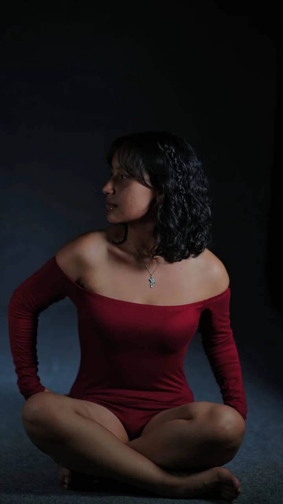

Fotógrafa · Colombia — Disponible para viajes
Derly Sofia Muelas
fotografía con alma
Eventos, ferias, modelos y publicidad capturados con sensibilidad. Cada imagen cuenta una historia auténtica.
Scroll
Eventos, ferias, modelos y publicidad capturados con sensibilidad. Cada imagen cuenta una historia auténtica.
Cada imagen y video refleja la esencia de lo que vivimos juntos. Filtra por categoría para explorar.

Siempre me ha gustado observar los pequeños detalles, las expresiones, la luz y esos momentos que muchas veces pasan desapercibidos. Con el tiempo descubrí que una cámara podía ayudarme a conservar todo eso y a contar historias sin necesidad de decir una sola palabra.
Lo que comenzó como una curiosidad se convirtió en una pasión. Decidí formarme profesionalmente porque quería aprender a crear imágenes con intención, capaces de transmitir emociones y conectar con las personas. Desde entonces, cada fotografía representa una oportunidad para capturar recuerdos auténticos y únicos.
Hoy disfruto cada sesión porque sé que detrás de cada imagen hay una historia, una emoción o un instante que merece ser recordado. Mi mayor satisfacción es que, cuando alguien vea sus fotografías, pueda volver a sentir exactamente lo que vivió en ese momento.
Cada servicio incluye una consulta previa, edición profesional y entrega en alta resolución.
Fotografía espontánea de bodas, fiestas, conferencias y celebraciones.
Retratos y producción de moda con dirección de arte y luz natural o de estudio.
Imágenes de producto, catálogos y campañas con acabado editorial.
Cobertura especializada en exposiciones, ferias y arreglos florales.

Derly capturó la esencia de nuestro evento sin interferir. Las fotos reflejan la energía y el profesionalismo que buscábamos.

Trabajar con ella fue muy natural. Logró que me sintiera cómodo y el resultado fue impecable.

Entiende la luz y la composición a la perfección. Cada entrega superó nuestras expectativas.

Su ojo para los detalles y los colores hizo que nuestra feria luciera espectacular en las fotos.
Recomiendo reservar con anticipación, especialmente para fechas especiales, fines de semana o temporadas de alta demanda. La reserva queda sujeta a disponibilidad de agenda.
Sí. Realizo sesiones y coberturas dentro de Colombia. Para destinos fuera de mi zona habitual, se pueden generar costos adicionales de transporte, alojamiento u otros gastos relacionados con el desplazamiento.
El tiempo de entrega depende del tipo de sesión y la cantidad de fotografías. Las imágenes se entregan después del proceso de selección y edición, dentro del plazo acordado al momento de contratar el servicio.
No. Los archivos RAW son parte del proceso de trabajo y edición, por lo que no se entregan. Las fotografías finales se entregan en formato digital, completamente seleccionadas y editadas.
La fecha se confirma una vez realizado el anticipo acordado. Hasta ese momento, la fecha no se considera reservada.
Respondo personalmente cada consulta dentro de 24 a 48 horas hábiles.